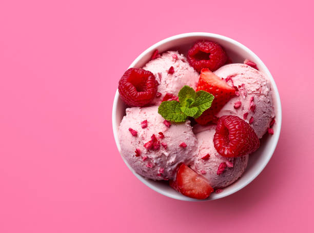

Neapolitan Icreams

Description
Neapolitan ice cream is a staple of the freezer aisle. Chocolate, vanilla and strawberry are served together —
but not mixed or swirled, no, instead, these three flavors are presented in three perfect sections without any
packaging dividing them
Ingriedients
- Cream
- Chocolate
- strawberry
- vanilla
- Strawberry Icecream
- Vanilla Icecream
- Coca Powder
preparation
- Combine sweetened condensed milk, vanilla, and salt in a large mixing bowl. Mix together and set aside.
- Add the heavy whipping cream to a large bowl. Use a hand mixer or stand mixer to whip the cream until stiff
peaks form. This should only take a few minutes.
- Add the whipped cream to the sweetened condensed milk mixture. Carefully fold the whipped cream into the
sweetened condensed milk mixture. Try to keep the mixture light and fluffy.
- Divide the mixture into three separate bowls.
- Leave one bowl as is (that's the vanilla). In the second bowl, stir in the cocoa powder.
- In the last bowl, add the powdered freeze-dried strawberries and a few drops of red food coloring until you
get a light pink ice cream.